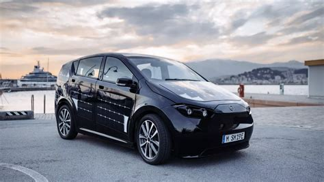

UNE REVOLUTION DE L'INDUSTRIE
MÉCANIQUE:
LA VOITURE SOLAIRE
I/LA VOITURE SOLAIRE
Une voiture solaire est un véhicule solaire utilisé pour le transport terrestre. Les voitures solaires sont généralement alimentées uniquement par le soleil, bien que certains modèles complètent cette puissance en utilisant une batterie ou utilisent des panneaux solaires pour recharger les batteries ou faire fonctionner des systèmes auxiliaires pour une voiture qui utilise principalement la batterie.Les voitures solaires combinent la technologie généralement utilisée dans les secteurs de l’aérospatiale, du vélo, des énergies alternatives et de l’automobile. La conception d’un véhicule solaire est fortement limitée par la quantité d’énergie introduite dans la voiture. La plupart des voitures solaires ont été construites pour des courses de voitures solaires. Certains prototypes ont été conçus pour un usage public, bien qu’aucune voiture principalement alimentée par le soleil ne soit disponible dans le commerce.Les voitures solaires dépendent d’un générateur solaire qui utilise des cellules photovoltaïques (cellules photovoltaïques) pour convertir la lumière solaire en électricité. Contrairement à l’énergie solaire thermique qui convertit l’énergie solaire en chaleur, les cellules photovoltaïques convertissent directement la lumière solaire en électricité. Lorsque la lumière du soleil (photons) frappe les cellules PV, elles excitent les électrons et leur permettent de circuler, créant un courant électrique. Les cellules photovoltaïques sont constituées de matériaux semi-conducteurs tels que le silicium et les alliages d’indium, de gallium et d’azote. Le silicium cristallin est le matériau le plus couramment utilisé et a un taux d’efficacité de 15 à 20%.
Title

II/L'HISTOIRE
Le premier véhicule solaire de l’histoirela Sunmobileest un modèle réduit de voiture inventé par William G. Cobb de General Motors. Elle est présentée la première fois à Chicago le 31 août 1955. Cette miniature est dotéede 12 cellules photovoltaïques en sélénium et d’un petit moteur électrique Pooley qui actionE nune poulie faisant tourner les roues arrière. La Sunmobile, fabriquée en bois de balsa, mesure moins de 40 cm de longueur. Elle prouve néanmoinspourlapremièrefoisque l’énergie solaire est capable de faire se mouvoir un véhicule.Après 5 ans de travail en Californie, le premier véhicule solaire pouvant transporter un être humain est mis au point et présenté en 1960 à Rome par le physicien et chimiste américain Charles Escoffery.Il s’agit d’une ancienne Baker,une voiture électrique datant de 1912,équipé et sur son toit de 2,42 m² de panneauxsolaires amovibles comportant10640 cellules.Cette installation a une puissance de 200 W avec des conditions d’ensoleillement optimales mais,pratiquement,cettepuissancedépasse rarement les 100 W pour un rendement des cellules atteignantseulement5%.
Partant d’une charge complète d’électricité, elle peut rouler durant3 heures à une vitesse maximum de 32 km/h.Cette voiture solaire est présentée dans le monde entier par sonconcepteur afindedémontrer que l’énergie solaire permet une mobilité propre et économique.Plus d’une décennie passe sans avancée notable documentée dans le domaine des véhicules terrestres solaires mais tout s’accélère dès la fin des années 1970. En 1977, le Prof.Ed Passerini de l’Université d’Alabama(USA)construit la Bluebird,un prototype de voiture solaire. Cette voiture est censée être la première à être propulsée uniquement grâce à l’énergie produite par ses panneaux solaires, sans l’aide 5 de batteries.
Le véhicule solaire est exposé en 1982 à l’Exposition internationale de Knoxville, dans le Tennessee, exposition qui a pour thème «Energy turns the World».Elle ne reste par contre qu’un prototype et ne fut jamais reproduite en masse.Au même moment à l’autre bout du monde, entre 1977 et 1980 , le Prof.Masaharu Fujita et son équipe de l’Université Denki à Tokyo invententla première bicyclette solaire puis développent la première voiture solaire japonaise. En 1979, l’Anglais Alan T.Freeman, concepteur du premier bateau solaire de l’histoire en 1974, crée une voiture solaireextrêmement légère.Son véhicule possède trois roues et un panneau solaire sur le toit.
Alan Freeman fait enregistrer son véhicule en 1980 et est ainsi le propriétaireet usager du premier véhicule solaire qui peut circuler légalement sur les routes du Royaume-Uni. L’Éinventeur anglaisconçoit en outre un vélo électrique solaire. En 1980, le département d’ingénierie de l’Université de Tel Aviv en Israël met au point, sous la direction d’Arye Braunstein,un modèle de voiture solaire, la Citicar. Le véhicule est composé d’un châssis de métal et possède des panneaux solaires sur son toit et son capot. Ceux-ci comprennent 432 cellules produisant 400W de puissance de crête. La Citicarpossède 8 batteriesde6 V chacune pour stocker l’énergie photovoltaïque. La Citicarpèse un peu moins de 600 kg, peut atteindre une vitesse de 65 km/h et a une autonomie de 80 km.
III/LES EVOLUTIONS DE L'AUTOMOBILE MODERNE
L’automobile telle que nous la connaissons n’a pas été inventé en une seule journée par un seul inventeur. L’histoire de l’automobile reflète une évolution qui a eu lieu dans plusieurs pays du monde. Il est estimé que plus de 100.000 brevets ont été créés jusqu’à aujourd’hui. L’histoire de la production automobile est surtout marquée par l’innovation technologique et les inventions qui ont été appliquées et adaptées dans le secteur mécanique.Tout comme annoncé précedemment ,après la création de la toute prémiere automobile d'autre automobile ont vu le jour sous different aspect et avec dufferents modes de fonctionnement nous retrouvons entre autres:
1784: Murdoch construit le premier modèle de travail d’une voiture-machine à vapeur (Grande-Bretagne)
1789: Evans a déposé le premier brevet sur l’automobile (USA)
1797: Locomotive à vapeur sur route de Trevithick.
1801: Richard Trevithick présente le premier véhicule routier britannique propulsé à la vapeur.832: Robert Davidson a construit une locomotive électrique
1860: Jean-Joseph Étienne Lenoir invente un moteur à combustion interne
1862: L’ingénieur français Alphonse Beau de Rochas, a breveté le cycle à quatre temps utilisé dans la plupart des moteurs à combustion interne modernes.
1864: Alexandre II, Tsar de Russie achète un des chariots de Lenoir et c’est la première exportation de voiture de l’histoire
1873: Amédée Bollée commercialise l’Obéissante, le premier véhicule collectif, capable de transporter douze personnes.
1876-1877 : Moteur à quatre temps de Gottlieb Daimler, Nikolaus Otto et Wilhelm Maybach.
1879: Siegfried Marcus Samuel, première voiture qui fonctionne à l’essence
1882 : le comte Albert de Dion, passionné pour tous les nouveaux moyens de locomotion, s’associe à Georges Bouton et à Charles Armand Trépardoux pour réaliser untricycle à vapeur, plus léger et moins cher que la concurrence de l’époque.
1887-1890 : Premières voitures automobiles Peugeot.
1891: Début de la production en série de trente automobiles Panhard & Levassor dont cinq seront vendues la première année. L’industrie automobile est née.
1891: Les frères Michelin mettent au point le pneu démontable pour bicyclette
1905: La collaboration fructueuse commerciale entre Henry Royce et CS Rolls pour donner la création de la société Rolls-Royce et le lancement de la 40/50 HP sixcylindres «Silver Ghost», qui sera bientôt saluée comme «la meilleure voiture au monde».
Après les années 1910_1915 le monde de la mécanique a connu de grande révolution avec ces nouveaux modeles de voitures innovants et leur design innovants les uns des autres ainsi parmi ces vehicules d'autres types de véhicules fut inventes avec des modes d'alimentation du moteur differents nous parlons ici des vehicules electriques,des vehiclues solaires...Nous allons ici nous interressé a la création puis a l'évolution des voitures solaires .